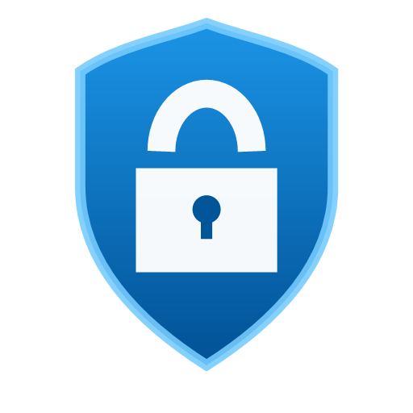

Aplicaciones protegidas
Guardian solicita autorización antes de iniciar las aplicaciones configuradas, incluso con el panel oculto.

ProtectedAppProtección localSEGURIDAD LOCAL PARA WINDOWS
Protección con contraseña para aplicaciones de escritorio y bóvedas cifradas que permanecen bajo tu control.
Código abierto · GPL-3.0 · Windows 10/11
ESTADO DE PROTECCIÓN
Protección activaDISEÑADO PARA EL USO DIARIO
Guardian solicita autorización antes de iniciar las aplicaciones configuradas, incluso con el panel oculto.
Contenedores .pavault con AES-256-GCM, modo de consulta o edición en unidad virtual.
Journals cifrados, copias anteriores y backups de configuración para recuperarse de interrupciones.
PARA QUIEN QUIERE SABER MÁS
ProtectedApp documenta su modelo de amenazas y sus límites. No sustituye BitLocker, las cuentas de Windows ni protege frente a un administrador local o malware con privilegios elevados.
Leer el modelo de seguridad →EMPIEZA CON INFORMACIÓN CLARA
Obtén el instalador, el archivo SHA-256 y el SBOM únicamente desde GitHub.
Verifica el hash y la firma antes de ejecutar un instalador.
La primera apertura te guía para proteger tu configuración local.
Las builds actuales están firmadas con un certificado de desarrollo público, no con un certificado de confianza comercial. Lee la guía antes de instalar.
GuíaPREGUNTAS FRECUENTES
Protege reglas locales, aplicaciones configuradas y datos dentro de bóvedas cifradas. No sustituye BitLocker ni protege frente a un administrador local.
No. Las bóvedas y Guardian trabajan localmente. Los webhooks son opcionales y se configuran expresamente.
Las contraseñas no se recuperan. Conserva fuera del equipo las contraseñas de copias y bóvedas.
RECURSOS DEL PROYECTO
Alcance, límites, privacidad, integridad de las versiones y qué hacer antes de instalar.
Leer la guía →Una explicación técnica de la arquitectura, Guardian, bóvedas y las decisiones de diseño.
Ver la explicación →Descripción, recursos visuales, enlaces oficiales y pautas para reseñas o artículos.
Abrir el kit →